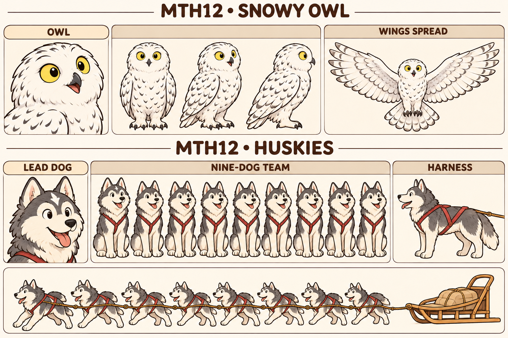

MTH12-OWL · 원문 기반 서면 시트 완료 / 신규 이미지 생성 대기
이미지 생성 도구가 usage_limit_reached를 반환했습니다. 아래 서면 시트는 원문 기반 제작 명세이며, 완성된 시각 시트로 표시하지 않습니다.

원문에 명시된 특징·사건
- 1장: 흰 깃털과 큰 노란 눈. Jack의 창밖 나뭇가지에서 울고 아이들을 나무집으로 이끈다.
- 2장 북극 도착 시 Morgan과 함께 사라진 상태다. 3장 개썰매가 출발할 때 위를 날고 있다.
계승 기준·제작 선택
- 흰 깃털·큰 노란 눈을 유지한다. 제작 선택: 작은 검은 부리, 드문 회색 무늬.
- 4권의 둥글고 단순한 눈·명료한 윤곽선·부드러운 음영을 새·동물에도 적용한다.
전용 이미지 시트 구성
- 가지에 앉은 정면·측면 / 날개 편 비행 / 눈과 부리 확대
크림 종이 바탕, 명료한 갈색 윤곽선, 부드러운 셀 음영. 인물 정면·¾·측면, 표정, 전신 비율과 소품을 검수합니다.
장면 생성 시 금지·주의
- 눈을 파랑으로 바꾸거나 앵무새·흰 독수리로 바꾸지 않는다.
- 다른 챕터에 원문 근거 없이 계속 동행시키지 않는다.